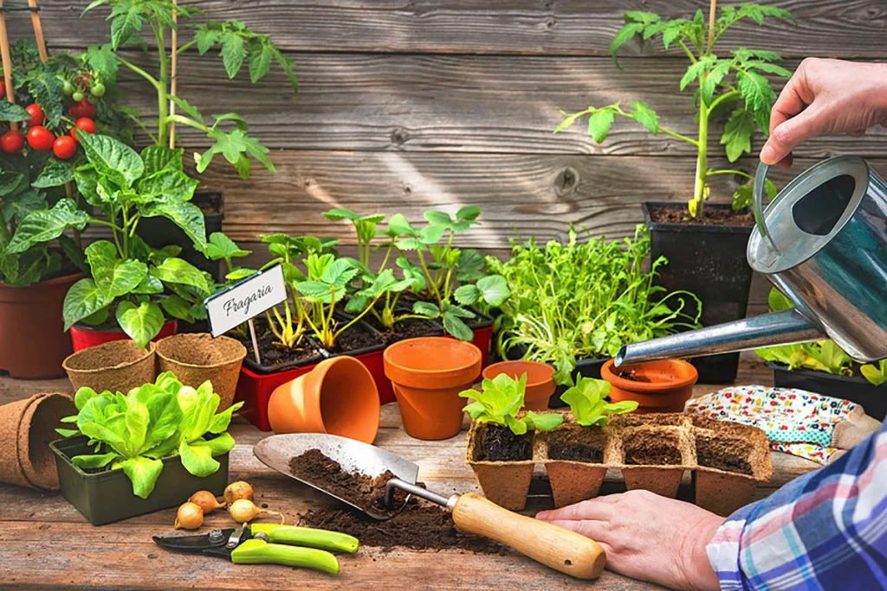
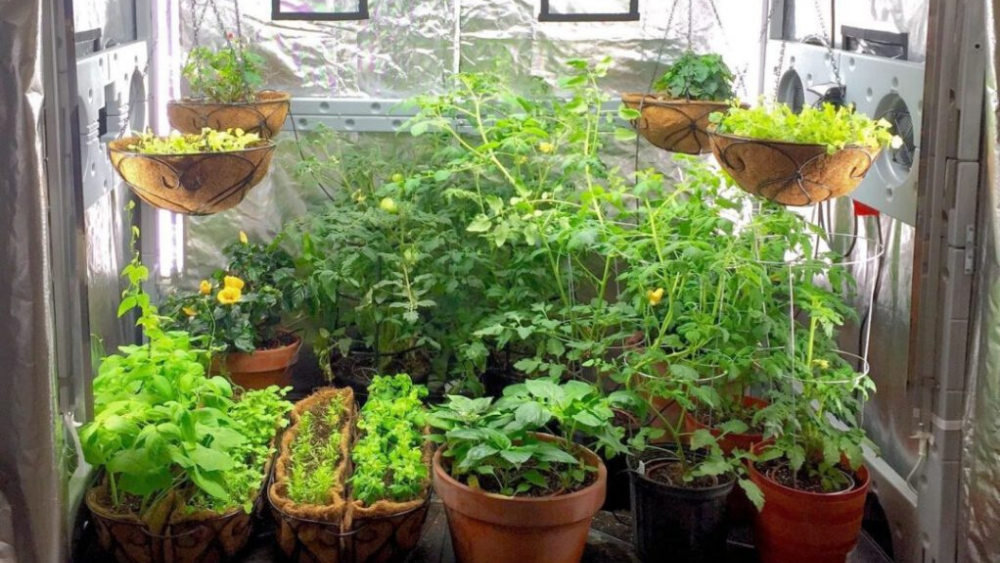
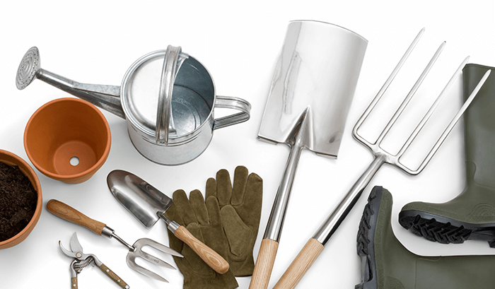
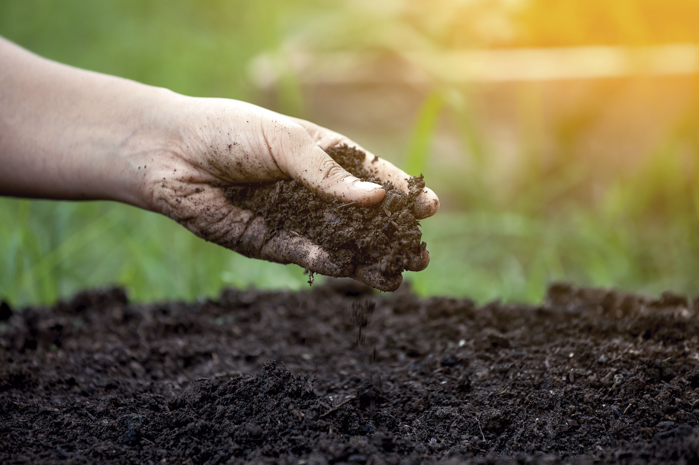
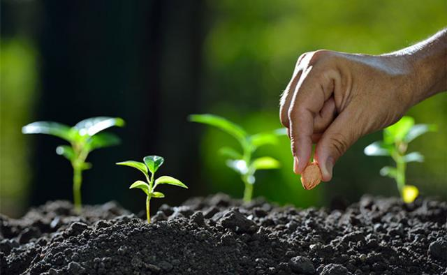

Como Começar a Cuidar de uma Horta em Casa
Devemos começar escolhendo o lugar que será feito e cuidado da horta, comece escolhendo um lugar com sol em grande parte do dia, sem fluxo de animais ou pessoas e o tamanho da área seja correspondente ao que será semeado. Caso seja feito em vasos, escolher vasos de polipropileno ou garrafas pet com furos no fundo para não haver acúmulo de água.
Escolha de Cultivo
Os cultivos feitos em hortas caseiras são em geral legumes e verduras de pequeno porte, por precisarem de poucos cuidados e serem muito parecidos no geral. Alface é uma das mais plantadas nos quintais, necessitando de água regularmente e contato com a luz do sol grande parte do dia, essa é uma das favoritas para plantio. O tomate cereja também é uma das favoritas, pois, dentre os tomates, é o que exige menos cuidado e possui menos risco de perda. Deve se ter o cuidado de escorar o caule para que ele não envergue com o nascimento de frutos.
Materiais Necessários
Para preparar o solo devemos usar certos materiais nessa tarefa. Enxada para realizar a limpeza do solo, pá para conseguir cavar um buraco que será posto as sementes ou o broto, regador ou mangueira para ser regada as plantas e adubo para o solo.
Preparo do Solo
É essencial que se tenha cuidados com o solo antes de semear qualquer tipo de cultivo. Primeiro passo para se preparar o solo é a limpeza de resíduos, retirando pedras e outros detritos que podem atrapalhar no crescimento saudável da horta. Agora é necessário a adição de adubo ou fertilizante para que o solo tenha nutrientes suficientes para o crescimento das plantas.
Semeando e Cuidando
Com tudo pronto agora é hora de plantar as sementes escolhidas, fique atento aos cuidados necessários que cada planta precisa para crescer. O combate a pragas é essencial em qualquer tipo de cultivo, utilize meios de proteção contra esse tipo de praga mas que não prejudique a colheita. Podar também é uma tarefa importante já que estimula o crescimento saudável das espécies. Seguindo essas dicas você aprendeu como é feito cada passo em um campo agrícola e agora basta esperar a colheita que deve ser feita de acordo com cada tipo de plantio.
